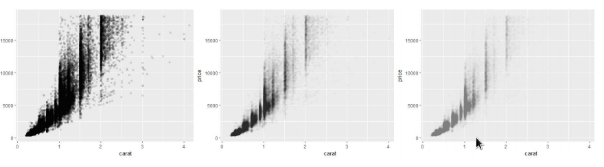

ggplot2是R语言中比较新的一个包，核心理念是将绘图与数据分离，数据相关的绘图与数据无关的绘图分离，按图层作图，保有命令式作图的调整函数，使其更具灵活性，将常见的统计变换融入到了绘图中
安装与使用
install.packages("ggplot2") |
qplot入门
数据集选取：diamonds
例：钻石价格和重量的关系qplot(carat, price, data = diamonds)
qplot(log(carat), log(price), data = diamonds) #曲线性
颜色，大小，形状属性
qplot(carat, price, data = dsmall, colour = color) |
alpha用来创建半透明的颜色，其取值从0（完全透明）到1（完全不透明）qplot(carat, price, data = diamonds, alpha = I(1/10))
qplot(carat, price, data = diamonds, alpha = I(1/100))
qplot(carat, price, data = diamonds, alpha = I(1/200))

几何对象geom
通过设置几何对象，qplot几乎可以画出任何一种图形
- geom = “point” 散点图（默认选项）
- geom = “smooth” 拟合平滑曲线
- geom = “boxplot” 箱线图
- geom = “path” 或 geom = “line” 数据点间绘制连线
对于一维的分布，geom的选择由变量类型指定
- 连续变量
- geom = “histogram” 直方图（一维数据默认选项）
- geom = “freqpoly” 频率多边形
- geom = “density” 密度曲线
- 离散变量
- geom = “bar” 条形图
如果在散点图中有非常多的数据点，那么数据展示的趋势可能并不明显。在这种情况下应该在图中添加一条平滑曲线。利用c()将多个几何对象组成一个向量传递给geom。qplot(carat, price, data = dsmall, geom = c("point","smooth")) #采样数据集
qplot(carat, price, data = diamonds, geom = c("point","smooth")) #完整数据集
箱线图和扰动图qplot(color, price / carat, data = diamonds, geom = "jitter") #扰动点图
qplot(color, price / carat, data = diamonds, geom = "boxplot") #箱线图
qplot(carat, data = diamonds, geom = "histogram") #直方图 |
- 对于密度曲线图，adjust参数控制曲线平滑程度（取值越大越平滑）。
- 对于直方图，通过binwidth参数设定组距来调节平滑度。
qplot(carat, data = diamonds, geom = "histogram",binwidth = 1, xlim = c(0,3)) #横坐标只显示0到3 |
要在不同分组之间对分布进行对比，只需再加上一个图形映射（aesthetic mapping）qplot(carat, data = diamonds, geom = "density",colour = color)
qplot(carat, data = diamonds, geom ="histogram", fill = color)
如果数据已经进行了汇总，或者想用其他方式对数据进行分组处理，那么可以使用weight几何对象。qplot(color, data = diamonds, geom = "bar") #下例是按重量加权的条形图；纵坐标改为crart
qplot(color, data = diamonds, geom = "bar",weight = carat) + scale_y_continuous("carat")
线条图和路径图常用于可视化时间序列数据。
- 线条图的x轴一般是时间，它展示了单个变量随时间变化的情况。
qplot(date, unemploy / pop, data = economics,geom = "line") #失业比例
qplot(date, uempmed, data = economics, geom = "line") #失业时间（星期数）中位数 - 路径图展示了两个变量随时间联动的情况，时间反映在点的顺序上。
year <- function(x) as.POSIXlt(x)$year + 1900
qplot(unemploy / pop, uempmed, data = economics, geom = "path", colour = year(date))
分面
除了利用颜色和形状来比较不同分组，还可以用分面：将数据分割成若干子集，然
后创建一个图形的矩阵。
qplot()默认的分面方法是拆分成若干个窗格，通过形如facets = row-var ~ col_var的表达式进行指定。如果只想指定一行或一列，可以使用.作为占位符，例row-var ~ .会创建一个单列多行的图形矩阵。
#针对属性color，创建单列多行分面 |
其他选项
- xlim, ylim：设置x轴和y轴的显示区间，例如，xlim=c(0, 20) 和 ylim=c(-0.9,-0.5)
- log：log=”x” 表示对x轴取对数；log=”xy”表示对x轴和y轴都取对数。
- main：图形主标题。可以是字符串也可以是数学表达式。
- xlab, ylab：设置x和y轴的标签文字，可以是字符串或数学表达式。
图层语法
散点图中，每个观测的数据都用一个点来表示。每个点的属性有横坐标、纵坐标、大小、颜色、形状，这些属性称之为图形属性（aesthetics，直译为“美学”）
图层语法（layered grammar)将一张图定义为以下组件的组合：
- 一个默认数据集和一组从变量到图形属性（aesthetics）的映射。
- 一个或多个图层。每个图层都由一个几何对象、一个统计转换、一个位置调整，以及一个可选的从变量到图形属性的映射。
- 一个标度：每个图形属性映射都对应一个标度。
- 一个坐标系统。
分面设定。
从数据单位（如英里每加仑、汽缸数）转换成电脑可以识别的物理单位（如像素和颜色），这个转换过程称之为标度变换（scaling）。
- 根据点的位置（x和y）来确定它在图中的位置，是由坐标系统决定的，被称作coord。
增加组件
增加组件的例子：qplot(displ, hwy, data=mpg, facets = . ~ year) + geom_smooth()
先分面，再添加一个平滑曲线
图层
图层的作用是在图上生成我们能理解的对象。
一个图层由四部分组成：
- 数据和图形属性的映射
- 统计转换
- 一种几何对象
- 一个位置调整（即一种位置调整的方式）
标度
- 标度控制数据到图形属性的映射。图上每一个图形属性都对应着一个标度。
- 每个标度都作用于图中所有的数据，以确保数据到图形属性映射的一致性。
- 图为四种不同scales的图例。
一个标度就是含有一组参数的函数。其逆函数被用来绘制参照对象，通过参照对象你才能读出图中的隐含信息。参照对象可以是坐标轴（位置标度），或者是图例
坐标系
坐标系（coordinate system）简称为coord，用于将对象的位置映射到图形的平面上。
- 位置通常由两个坐标(x,y)决定，三维及以上尚未在ggplot2中实现。
- 笛卡尔坐标系是最常用的二维坐标系，极坐标系和地图投影用的相对较少。
绘图方式
绘图有两种方式
- 一步到位式：利用
qplot() 利用
ggplot()函数和图层函数逐步作图。print()将图形呈现到屏幕上。ggsave()将图形保存在磁盘上。summary()简单查看图形的结构。- 首先给出图形的默认设置，然后给出每个图层的信息。
save()把图形的缓存副本（一个图形对象的完整副本）保存到磁盘，稍后可用load()来重现该图。p <- qplot(displ, hwy, data = mpg, colour = factor(cyl))
summary(p) # Save plot object to disk
save(p, file = "plot.rdata")
rm(p) #删除p
# Load from disk
load("plot.rdata")
print(p)
# Save png to disk
ggsave("plot.png", width = 5, height = 5)
用图层构建对象
qplot()只能只用一个数据集来做图形映射，为了解决这个问题，需要引入图层。
qplot()使用了很多默认的参数，如果要手动绘图，则需要使用ggplot()，ggplot()函数中包含了两个主要参数：数据和图形属性映射。数据是data.frame或者data.table，图形属性的设定类似qplot()，包含在一个aes()函数里p <- ggplot(diamonds, aes(carat, price, colour = cut)) #此时显示的图还是空，需要设立几何对象
p <- p + layer(geom ="point",stat="identity",position="identity")
图层参数
图层的设立参数有：layer(geom, params, stat, data, mapping, position)
例：ggplot()绘制条形图：p <- ggplot(diamonds, aes(x = carat))
p <- p + layer(
geom = "bar",
params = list(fill = "steelblue", binwidth = 2),
stat = "bin",
position="identity"
)
快捷函数（short cut）
图层的参数设定细致但过于繁琐。可以用快捷函数（shortcut)来简化之前的代码。
- 每一个几何对象都对应一个默认的统计变换和位置参数，而每一个统计变换都对应着一个默认的几何对象参数，所以对于一个图层我们只需设定stat或geom参数即可。
- 上页图可用以下代码生成：
p+geom_histogram(binwidth = 2, fill = "steelblue")
所有的快捷函数都有相同的形式：以geom或stat开头。geom_XXX(mapping, data, ..., geom, position) – stat_XXX(mapping, data, ..., stat, position)
参数：
- mapping：图形属性映射，通过aes()设定。
- data：可以修改默认数据集
- geom或stat参数，如上例中的
binwidth = 2, fill = "steelblue" - position：选择一种调整对象重合的方式。
从qplot()到ggplot()
例一：qplot(sleep_rem / sleep_total, awake, data = msleep)
#等价于
ggplot(msleep, aes(sleep_rem / sleep_total, awake)) + geom_point()
例二，也可以给qplot加图层:：qplot(sleep_rem / sleep_total, awake, data = msleep) + geom_smooth()
#等价于
ggplot(msleep, aes(sleep_rem / sleep_total, awake)) + geom_point() + geom_smooth()
图形变量
图形对象可以存储到一个变量里。summary()可以查看图形的结构。首先给出图形的默认设置，然后给出每个图层的信息。p <- ggplot(msleep, aes(sleep_rem / sleep_total,awake))
summary(p)
p <- p + geom_point()
summary(p)
+运算符可以看作图层叠加计算
同时，图层函数geom_XXX()也可以作为变量存储
图和图层
默认的图形属性映射可以在图形对象初始化时设定，或者之后用“+”修改。
例：p <- ggplot(mtcars, aes(x = mpg, y = wt))
p + geom_point() – p + geom_point(aes(colour = factor(cyl))) #用factor(cyl)修改颜色
p + geom_point(aes(y = disp)) #用disp修改y坐标值
aes的修改是叠加的，直接对新变量赋值会增加aes属性，对已有属性赋值会修改属性，赋NULL会删除属性
分组
所有离散型变量的交互作用被设计为分组的默认值。但如果没能正确分组或图中没有离散型变量，就需要自定义分组结构。library(nlme)
qplot(age, height, data=Oxboys, group = Subject,geom="line") #指定Subject（每个男孩）为分组标量，每条线对应一个男孩。
匹配图形属性和图形对象*7.3
对于连续型变量，如果希望线段平稳地从一种图形属性变换到另一种图形属性，可以使用线性插值法。xgrid <- with(df, seq(min(x), max(x), length = 50))
interp <- data.frame(
x = xgrid,
y = approx(df$x, df$y, xout = xgrid)$y,
colour = approx(df$x, df$colour, xout = xgrid)$y
)
qplot(x, y, data = df, colour = colour, size = I(5)) + geom_line(data =
interp, size = 2)
工具箱
图层叠加策略
图层有三种：
- 用于展示数据本身（data）。
- 辨识数据的整体结构、局部结构、离群点。
- 在数据探索的初始阶段，本层通常是唯一的图层。
- 用于展示数据的统计摘要（summary）
- 用于展示模型的预测效果。
- 绘制在数据层之上。
- 用以添加额外的元数据（metadata）、上下文信息和注解
- 元数据层展示背景上下文，帮助我们理解原始数据。元数据既可以作为前景也可以作为背景。地图经常作为空间数据的背景层。背景元数据不应影响主数据展示，因此它往往被放置在主
数据下层，配色不能突出，“想看就看看到，不想看就看不到” - 元数据也可以用来强调数据中的重要特征，比如为离群点加上解释性的标签。这时元数据图层是最后绘制的图层。
- 元数据层展示背景上下文，帮助我们理解原始数据。元数据既可以作为前景也可以作为背景。地图经常作为空间数据的背景层。背景元数据不应影响主数据展示，因此它往往被放置在主
*7.4未完待续
标度，坐标轴和图例
- 标度（scale）控制着数据到图形属性的映射。标度将数据转化为视觉上可以感知的东西：大小、颜色、位置、形状。
- 标度也提供了读图时所使用的工具：坐标轴和图例，它们称为引导元素（用于允许读者从图形属性空间到数据空间进行反向映射）。
- 每一种标度都是从数据空间的某个区域（标度的定义域）到图形属性的某个区域（标度的值域）的一个函数
执行标度的过程分三步：变换（transform）、训练（training）、映射（mapping）。
- 图形中的每一个图形属性都需要一个标度。
- 通常ggplot2将自动添加一个默认的标度。
- 标度分四类：位置标度、颜色标度、手动离散型标度、同一型标度。
例：改变标度p <- qplot(sleep_total, sleep_cycle, data = msleep, colour = vore) #左上图
p + scale_colour_hue() #右上图，显式添加默认标度，跟左上图一样
p + scale_colour_hue("What does\nit eat?", breaks = c("herbi", "carni", "omni", NA), labels = c("plants", "meat", "both", "don't know")) #左下图： 修改了默认标度的参数：改变 了图例的外观。
p + scale_colour_brewer(palette= "Set1") #右下图：使用了不同的标度：改变了点的颜色
*7.5未完待续